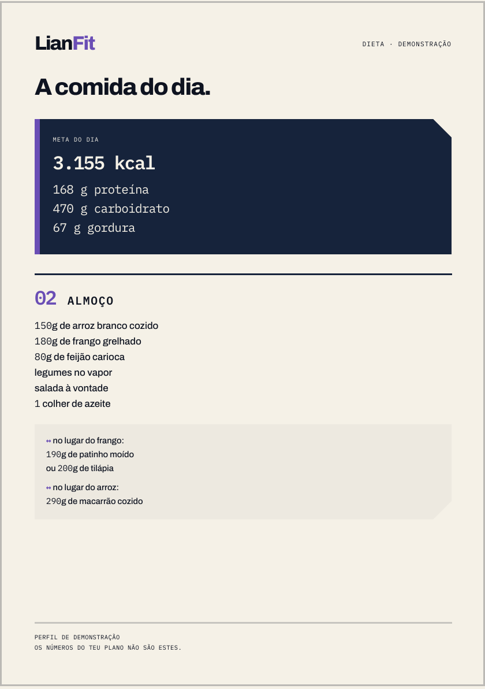
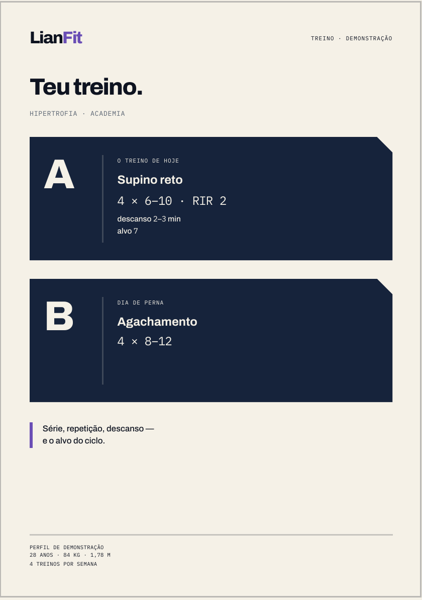
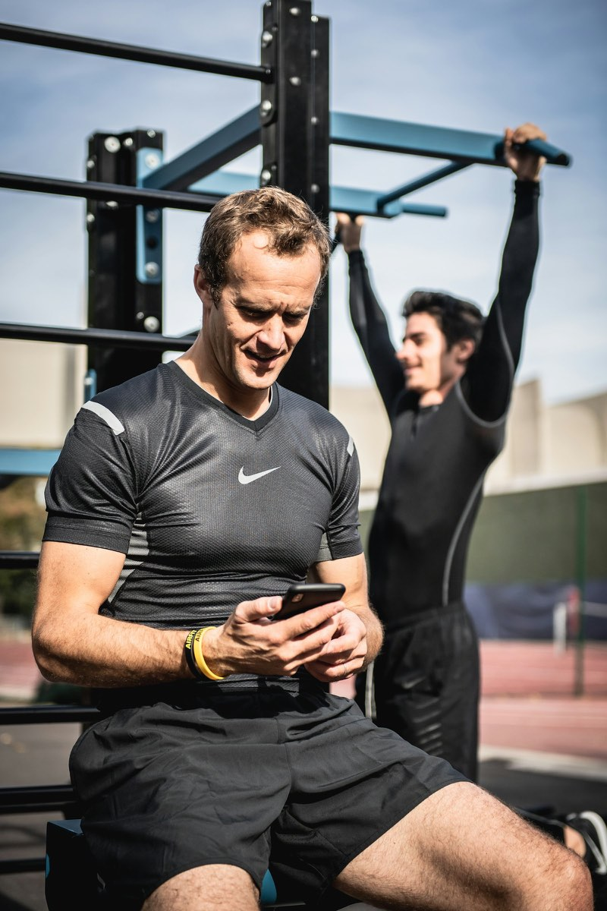
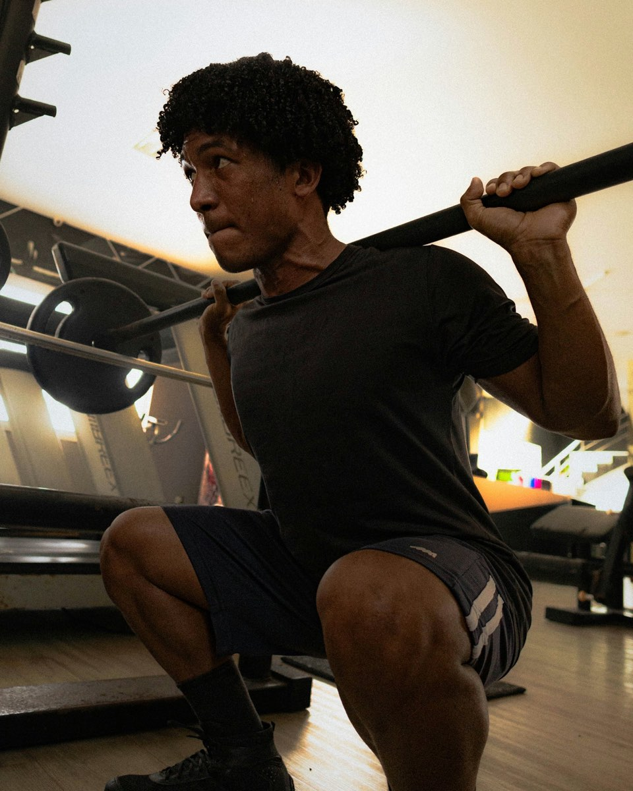

Encaixa na tua vida.
Treino e dieta sob medida no teu WhatsApp, 24 horas por dia, por R$ 19,90 ao mês. Sem app, sem fidelidade.
Começar no WhatsAppGente que treina de verdade, com uma vida de verdade.
Trabalho, faculdade, restaurante às onze da noite. O plano tem que caber nisso, e não o contrário.
O plano cede. O rumo não.
Aplicativo entrega um plano e some. O LianFit fica, e reescreve o plano quando a vida muda de ideia.
1 de 6Manda a foto do prato. Ele estima calorias e proteína e ajusta o resto do dia.
2 de 6Acabou o frango? Ele troca por outro alimento com os mesmos macros.
3 de 6Aparelho ocupado, ombro dolorido, hotel sem academia. Ele troca o exercício e o treino segue.
4 de 6Ele te chama primeiro, todo dia de manhã, com o treino do dia.
5 de 6Dia ruim também tem plano. Voltar pequeno é melhor que não voltar.
6 de 6A cada 28 dias, plano novo com o que tu registrou. Não é o mesmo PDF renovado.
Isto é o que chega no teu WhatsApp.
Duas folhas: o treino de um lado, a comida do dia do outro. Em gramas, com as trocas já calculadas.


Quatro passos, tudo no WhatsApp.

1A conversa
Ele pergunta teu objetivo, tua rotina, o que tu come, o que dói e o que tu odeia comer.
-
2
O plano
Treino e dieta montados pra ti, entregues em PDF na conversa.
-
3
O dia a dia
Ajuste na hora, todo dia, quantas vezes precisar. É aqui que a coisa acontece.

4O ciclo
A cada 28 dias, plano novo com base no que tu registrou, não no que tu prometeu.
R$ 19,90por mês. Só isso. Tecnologia escala, gente não.
- Treino e dieta montados pra ti
- Ajuste ilimitado, 24 horas por dia
- Foto do prato com leitura de macros
- Plano novo a cada 28 dias
- Pix ou cartão, sem fidelidade
- Cancelamento pelo próprio WhatsApp
O mesmo acompanhamento que custa centenas por mês com nutricionista e personal cabe em R$ 19,90 quando quem atende às três da manhã é software.
O que costumam perguntar antes.
Isso substitui nutricionista ou personal?
Não. O LianFit é acompanhamento de treino e alimentação assistido por inteligência artificial. Não faz diagnóstico, não prescreve tratamento e não substitui consulta com profissional de saúde.
É uma IA mesmo?
É, e a gente não esconde. Quem responde no WhatsApp é uma IA. É justamente por isso que ela está acordada às onze da noite e responde na hora.
Preciso de academia?
Não. O treino é montado com o que tu tem: academia, casa, hotel, parque. Se mudar de lugar, ele remonta.
E se eu sair da dieta?
Nada acontece. Tu manda o que comeu, ele recalcula o resto do dia e segue. O plano cede pra que o rumo não mude.
Como eu cancelo?
Escrevendo na mesma conversa. Sem ligação, sem formulário, sem fidelidade.
Serve pra quem está começando?
Serve. Quem está começando é justamente quem mais se perde sozinho entre planilha da internet e print de treino dos outros.
A vida real cabe aqui.
Começa hoje por R$ 19,90. Se não encaixar, tu cancela na mesma conversa.
Começar no WhatsApp